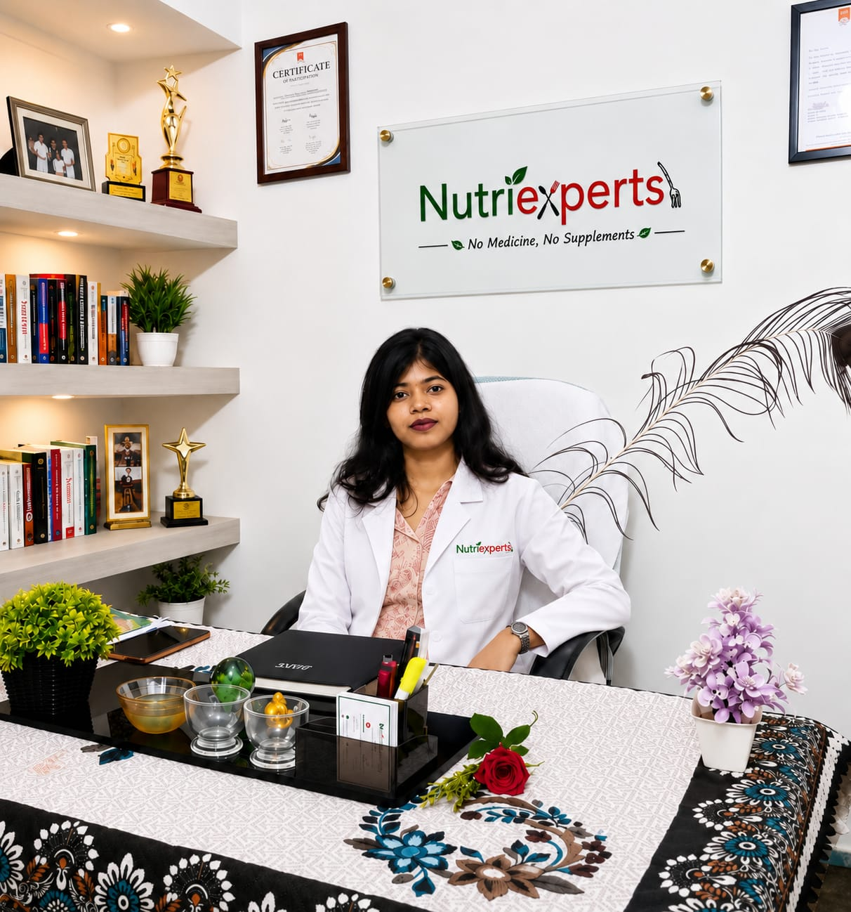
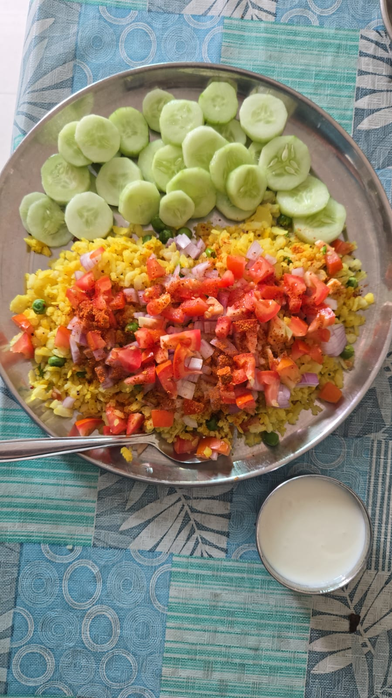
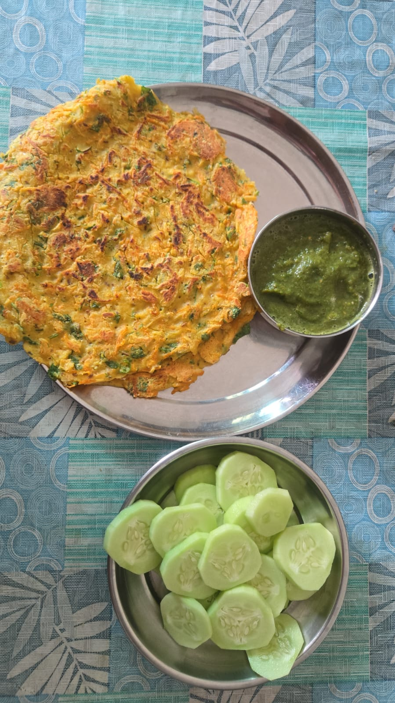
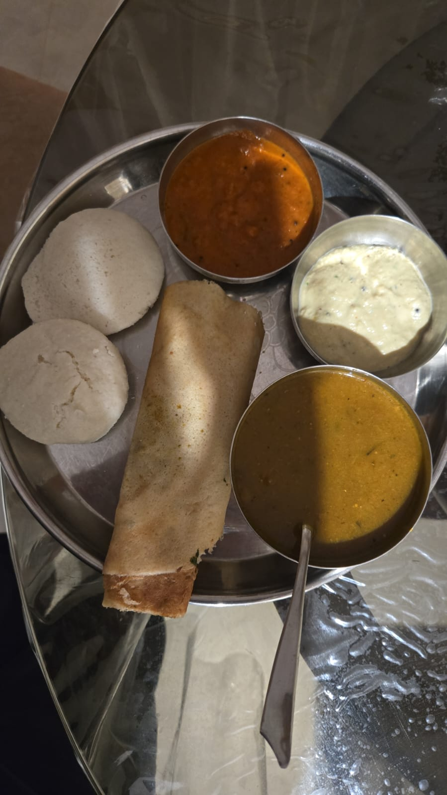

Personal nutrition, from a real dietitian
NutriExperts pairs you with a dedicated dietitian who builds a plan around your body, your schedule, and the food you actually eat — no medicine, no supplements, no crash diets. Just guidance that adjusts as you do.
Why NutriExperts
Built around your lifestyle, food preferences, and goals — not a generic chart.
We work with food and habits, not pills or powders.
We don't hand you a diet chart and disappear — check-ins keep you on track.
Enjoy the food you already cook and love, adjusted to work for your goal.
Your plan evolves with your weight, energy, and results — nothing stays static.
Questions don't wait for office hours, so neither do we.
Meet your dietitian

Qualification — M.Sc. Clinical Nutrition
4 years of experience in areas such as Weight Management,PCOD,Diabetes,Thyroid, and My approach to working with clients is food-first, no medicine or supplements.
What your plate could look like



How it starts
A short health and lifestyle questionnaire — no clinic visit required.
A real conversation about your goals, routine, and food habits.
Built around food you already eat, with swaps you'll actually keep.
Check-ins and plan updates as your weight, energy, and life change.
Programs
Whether you're managing a condition or training for something, your plan is designed around it — with no medicine or supplements involved.
See all programsConditions we support
Nutrition support only — this does not replace medical treatment. Please continue any prescribed medication and consult your doctor for diagnosis and treatment.
Myth vs fact
Carbs make you fat.
Your overall diet and portions matter far more than any single food group.
You need supplements to lose weight.
A well-planned diet can meet most people's nutrient needs on its own.
Rice and roti must be avoided to lose weight.
Portion size and what you pair it with matter more than cutting it out completely.
"I didn't have to give up dal-chawal or my evening chai. The plan just fit into my actual routine — and the check-ins kept me honest."— Samiran, Weight Management program
Questions
No. We work with the food you already eat and adjust portions and pairing, not cut out entire food groups.
No — NutriExperts is food and habit based. No medicine, no supplements. If you're on prescribed medication, keep taking it and stay in touch with your doctor.
Yes. Your dietitian builds in flexibility for travel days and eating out from the start.
Regular check-ins are part of every plan, with adjustments made as your progress changes.
Yes — we offer a dedicated Diabetes, Thyroid, Gut & PCOD Care program. It works alongside your doctor's treatment, not instead of it.